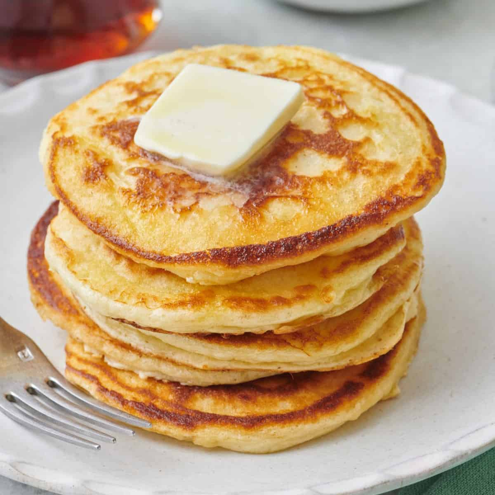

Pancakes
Odin Recipes

Description:
Pancakes are fluffy, round cakes made from a batter of flour, eggs, milk, and baking powder, cooked on a griddle or skillet until golden brown. They’re typically served stacked and topped with butter, syrup, and a variety of other toppings like fruit, whipped cream, or nuts for a comforting breakfast or brunch.
Ingredients:
Steps:
-
Prepare the Batter: In a bowl, whisk together 1 cup of flour, 1 egg, and 1 cup of milk until smooth and well combined. The batter should be slightly lumpy but not too thick.
-
Heat the Pan: Melt a small amount of butter in a skillet or griddle over medium heat.
-
Cook the Pancakes: Pour a small amount of batter onto the hot skillet, spreading it into a round shape. Cook until bubbles form on the surface and the edges start to look set, then flip and cook until the other side is golden brown. Repeat with the remaining batter.